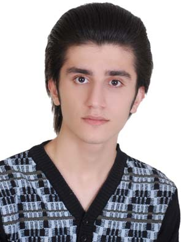
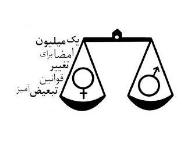
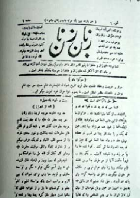
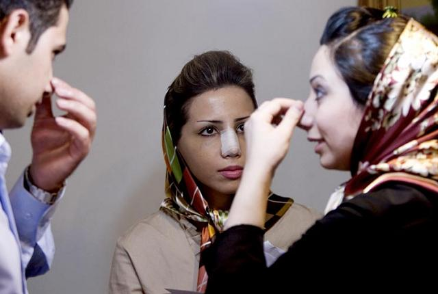
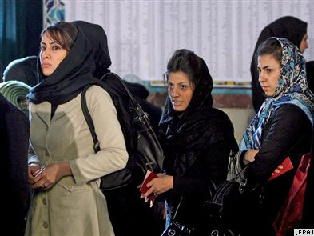
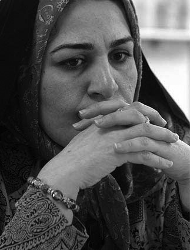

مقالههاى اين بخش
- 12 اردیبهشت 1388

بازتاب
نه از جنس خودم نه از جنس شما
- 12 اردیبهشت 1388

گزارشی از سرنوشت مبهم اجراي بيمه طلاق
جهان نیوز
- 11 اردیبهشت 1388

گفت و گو با شیرین عبادی و رضا معینی، برندگان جایزه بنیاد رولاند برگر
رادیو زمانه
- 11 اردیبهشت 1388
کرزای:
دویچه وله
- 10 اردیبهشت 1388

وب لاگ
کمپین آمل
- 10 اردیبهشت 1388

زنان افغانستان
شبکه بین المللی همبستگی با مبارزات زنان ایران
- 9 اردیبهشت 1388

تحلیلی بر نماد و نهاد سیاستهای جنسیتی دولت نهم
میدان زنان
- 9 اردیبهشت 1388

برابری خواه
دویچه وله
- 8 اردیبهشت 1388

در گفت و گو با روز
روزآنلاین
- 7 اردیبهشت 1388
پنجاهمین نفر
حوا
- 7 اردیبهشت 1388
اتهام برابری
نجوای آزادی
- 6 اردیبهشت 1388

برای مریم
ورق پاره های زندان
- 6 اردیبهشت 1388

نويسنده : گاگانديپ
کانون زنان ایرانی
- 6 اردیبهشت 1388

در حاشیهی نود سالگی روزنامهی زبان زنان
رادیو زمانه
- 5 اردیبهشت 1388

گفتگو با معصومه ابتکار
فردا
- 4 اردیبهشت 1388

پروین اردلان در گفتوگو با بامدادخبر:
بامدادخبر
- 2 اردیبهشت 1388

اشپيگل آنلاين
خبرنامه امیرکبیر
- 2 اردیبهشت 1388
گفتگوی ابتکار با ایلنا
بامداد خبر
- 1 اردیبهشت 1388
طرح استتار مدارس دختران:
دویچه وله
- 30 فروردین 1388
گفت و گو با نسرین ستوده، پیرامون دادگاه ناهید کشاورز
رادیو زمانه
- 29 فروردین 1388

انتخابات 88
رادیو فردا
- 28 فروردین 1388

قوانین و انتخابات
بی بی سی فارسی
- 28 فروردین 1388

تبیین مواد اعلامیه جهانی حقوق بشر - ماده 30
رادیو زمانه
- 27 فروردین 1388
زنان افغانی در کافی نت ها
کانون زنان ایرانی
- 27 فروردین 1388

انتخابات
مدرسه فمینیستی
- 26 فروردین 1388

به یاد مادر محبوبه
روزنه
- 26 فروردین 1388

آمار دختران مجرد رو به افزايش است،
گویا
- 25 فروردین 1388

بحثهای انتخاباتی در ایران:
دویچه وله
- 24 فروردین 1388

فعالان اجتماعی و سال نو
کمیته علیه خشونت های ناموسی/پروین ذبیحی
- 23 فروردین 1388

کدخدايی:
رادیو فردا
| ... | | | | | 1200 | | | | | ... |